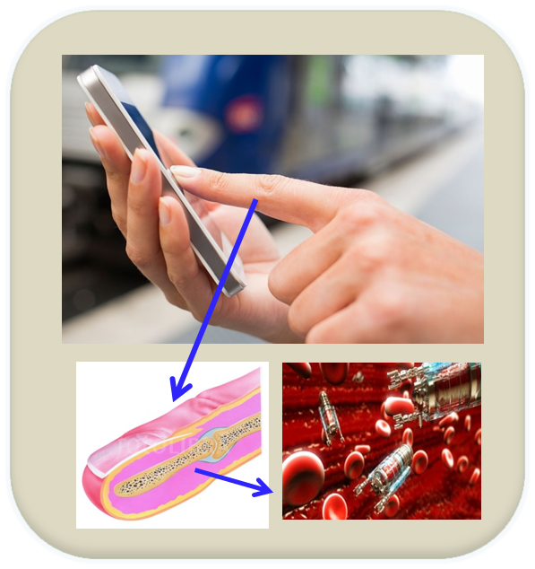
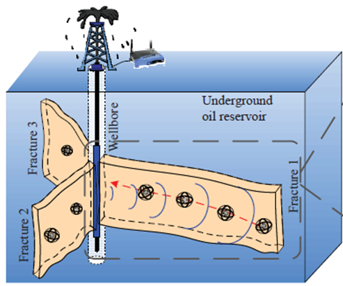
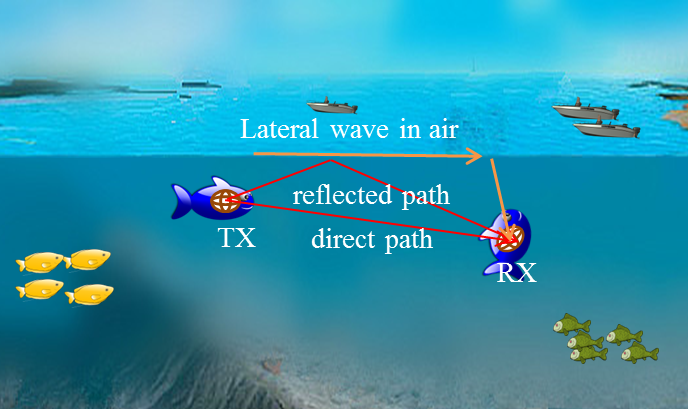

|
Research
Magnetic induction communications
Nanosensor networks; nano-biosensing
Wireless system design in extreme environments: underground, underwater, and intra-body
Metamaterial modeling, design, and fabrication
Wireless sensing: system design and signal processing
Nano-biosensing
|
 |
Conventional Raman spectroscopy equipments are bulky and expensive. This project aims to design a nano-sensor network on a smart ring which can emit light and reconstruct the Raman spectrum based on the scattered light from nano-biofunctional particles inside human body.
H. Guo, P. Johari, J. M. Jornet and Z. Sun, "Intra-Body Optical Channel Modeling for In Vivo Wireless Nanosensor Networks," IEEE Transactions on NanoBioscience, vol. 15, no. 1, pp. 41-52, Jan. 2016.
|
Metamaterial Antenna
The motivation of this project is to improve the communication range and data rate of magnetic induction communications in complex environments. Metamaterial is a flexible artificial material which demonstrates extraordinary performance. We start the analysis from theoretical modeling based on electromagnetic theory. The promising performance motivates us to design a practical antenna using printed circuit board.
H. Guo, Z. Sun, J. Sun, and N. M. Litchinitser, "M2I: Channel Modeling for Metamaterial-Enhanced Magnetic Induction Communications", IEEE Transactions on Antennas and Propagation, Vol. 63, No. 11, pp. 5072-5087, November 2015.
Magnetic Induction Communication in Oil Reservoir
|
 |
Wireless sensing in oil reservoir is of paramount importance to improve the oil recovery factor and intelligently develop the reservoir. We propose a self-contained sensing system using magnetic induction communications. The sensors in oil reservoir can be connected wirelessly and the sensing data can be transmitted to data fusion center in multihop fashion. Meanwhile, a dipole antenna in the wellbore can wirelessly charge the sensors in oil reservoir.
H. Guo, and Z. Sun, "Channel and Energy Modeling for Self-Contained Wireless Sensor Networks in Oil Reservoirs", IEEE Transactions on Wireless Communications, Vol. 13, No. 4, pp. 2258-2269, April 2014.
|
Magnetic Induction Communication in Underwater
|
 |
This project focuses on swarming cyber-physical systems (swarming CPS) consisting of a collection of mobile networked agents, each of which has sensing, computing, communication, and locomotion capabilities, and that have a wide range of civilian and military applications. The mobile agents are connected wirelessly using magnetic induction communications. A magnetic induction channel model is derived based on electromagnetic theory by considering the lateral wave on the surface.
H. Guo, Z. Sun, and P. Wang, "Multiple Frequency Band Channel Modeling and Analysis for Magnetic Induction Communication in Practical Underwater Environments", to appear in IEEE Transactions on Vehicular Technology, 2017.
|
|